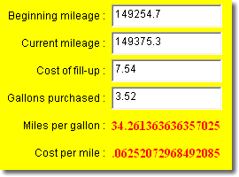
In previous lessons, you learned how to convert between numeric types, likeint
and double. But, how to you convert between numeric
values like 235 and Strings like "235"?
That's what you'll learn in this lesson.
We're going to perform two different kinds of
conversions. You'll learn how to:
- convert numeric values like
.06252072968492085and34.261363636357025into nicely formatted (and much more readable) output like 34.261 and $.06. - convert numeric
Stringvalues, such as the"7.54"supplied by the user as the cost of a fill-up in the text-field on the right into numeric values that can be used in expressions and calculations.
To accomplish these tasks, we'll make use of the String
format() function, it's close cousin, the PrintStream
printf() method, and the conversion facilities in
two of Java's "wrapper" classes, Integer
and Double.
Let's start by looking at output formatting. We'll come back to input conversion later in the lesson.
String Concatenation
The easiest way to convert a number to a String is
to use String concatenation. In earlier lessons
you saw how String concatenation could be used to
"paste" two Strings together to form a third, like
this:
String favoriteFood = "spam";
String message = "My favorite food is";
String combo = message + " " + favoriteFood;
You also saw how String concatenation can also be used to
automatically convert numbers—of any
type—into Strings as well, like this:

To create the String variable named
result the program concatenates a
float variable (num), an int
variable (i) and a double variable
(calc) along with several String literals
that are used to label the resulting values.
When you put this
code into an application and run it using println() to
display the value of the variable result, you'll see
something like this:

When the concatenation occurs, Java first has to convert
each of the variables to a textual format. For instance, the
int variable num contains the binary value
1001000 which must be converted to the character
sequence 00110111-00111001 which are
the Unicode values for the two characters '7' and
'9'. That character sequence then must be converted
to a Java String object and that object must be
combined with the String labels.
When you use String concatenation and allow
Java to automatically convert your variables, you have no
real control over the way in which the number is presented.
Notice that while num and i look
pretty much like you defined them, the variable calc
displays 15 digits past the decimal point, which may not
be what you'd like.
If you want to control the number of decimal places, add
commas to separate thousands, or do other formatting tasks,
you can use the format method of the String
class, described in the next section.
String Formatting
 When Java was first introduced, it "borrowed" much of its
syntax from the C and C++ programming languages. On thing that
was missing, though was the ability to precisely control
the formatting of textual output like the C standard library
function
When Java was first introduced, it "borrowed" much of its
syntax from the C and C++ programming languages. On thing that
was missing, though was the ability to precisely control
the formatting of textual output like the C standard library
function printf().
Part of this was because when C++ was introduced, its designers attempted to make output formatting more "object-oriented", although the resulting code was more complex. In Java 1.0, there were no output formatting methods, but in 1996, Java 1.1 introduced the java.text package that took its inspiration from the C++ object-oriented world.
Of course, that just made the
code you had to write even more complex (as you can see
from this screenshot on Cay Horstmann's Web site, called
The March of Progrress.)
One of the library additions that was introduced with Java 5
was the java.util.Formatter class that brought
C-printf-style formatting to the System.out
object and to the String class.
Rather than using the System.out.printf() method,
I'm going to teach you to use the String.format()
method, which uses the same general syntax and format specifiers.
If you use printf() your code will only
work in a standard console program. If you use format
you can display the resulting String in a regular
console program, an ACM console program, a dialog-based
program or in a graphical program. It's just much more
flexible.
The String format() Method
The format() method is a static function
in the String class, similar to the static
functions in the Math class. That means, to call
the function you must add a static import to your
program, like this:
import static java.lang.String.*;
or call the function by using the class name, String,
in front of each function call.
The format() method takes at least one parameter,
which is known as the format String, and then one additional
parameter for each variable or value that you want to
appear as part of the formatted output. The method returns
a formatted String which you can then display.
For each additional parameter, you must supply a placeholder
inside the formatting string, called a format specifier
that gives the format() method instructions on
how to format that particular parameter.
How format() Works
Here is a "block" diagram that shows generally how the
String format() method works:
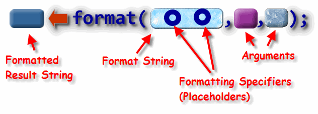
I find that having a "high-level" overview of the function, before I use it helps me avoid getting lost in the different syntax detailsNotice that:
- The first (and only required) parameter is the format string.
- The format string may contain any number for formatting specifiers. These are placeholders for values which will be combined with the literal portions of the formatting string. In my block diagram, there are two placeholders, marked by the blue donut symbols.
- For each placeholder, you must supply exactly one argument or parameter. If you have two formatting specifiers in your formatting string, then you must have two additional arguments, not one or three. These arguments must match the type specified when you added the formatting specifier. (We'll look at the syntax shortly.)
- Finally, after it formats each additional argument and concatenates it with the literal portions of the formatting string, a formatted string is returned as the result.
A Format Specifier Example
Each placeholder or format specifier starts with a percent symbol, followed by a special character that specifies what kind of value you'll supply as an argument.
To experiment with these different specifiers, I'll use
the Eclipse Scrapbook feature. Here is the same
example I used earlier in this lesson when talking about
concatenation. Because I'm using the Scrapbook feature,
I can just call the String.format() method
and click the Evaluate button to see the result.
If this were in a real program, you'd need to save the
results to a variable.
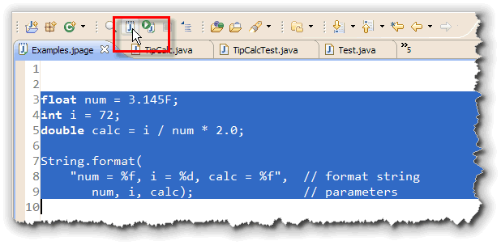
Notice the line commented as format string:
- contains literal text, like the words "calc =" and
the commas. These literals are concatenated with the
formatted values, just like the
Stringliterals in the original example. - contains three format specifiers, two
instances of
%fand one instance of%d. The two%fspecifiers require floating-point arguments, while the%dspecifier requires an integer argument.
Finally, notice the line marked parameters. Since the
format string has three placeholders or specifiers, I have
to supply three additional parameters. Moreover, since the
middle parameter is specified as an integer, I have to pass
the variable i in that position.
Here's the result when this is evaluated in Eclipse:
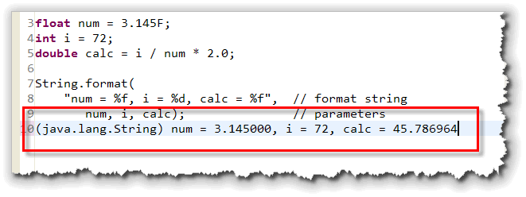
Notice that unlike the concatenation example, both thefloat and double variables display
six digits after the decimal point.
Because this is being evaluated using the Eclipse Scrapbook
interpreter, the type of the expression
(java.lang.String), is displayed in front of
the results.
Formatting Conversion Types
So, what kind of things you you format? Mostly numbers, but
you can also format strings and dates and times. Here are
the most common conversion types, that is, the special
character that appears after the % sign when
you add a placeholder to your formatting string.
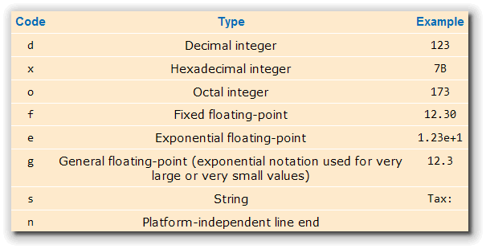
Basically, you can break this into three pieces:
- Integers: if your number is an integer, you can
display it as a decimal number by using
%d. This is what you'll do most often. You can display the output in a different base by using%ofor octal output and%xfor hexadecimal output. You'll probably use these two alternatives very rarely. - Floating-point numbers: both
doublesandfloatsuse the same formatting specifier. Use%ffor fixed-point output; this is what you'll use most often. However, if you have very large or very small numbers, you can use%eto specify scientific or exponential output. The third specifier,%g, uses fixed point for "normal" numbers and exponential for very large or very small numbers. Usually, I think it's more convenient to specify exactly which you want. - String values: literal
Stringoutput is usually supplied as part of the formatting string itself. Often, though, you'll need to combine values fromStringvariables as part of your formatted output, as when printing a table of student names along with their grades. In this case, you need to use the%sformat specifier.
Finally, there are two other special-purpose specifiers:
%n (which is shown in this table) and
%% (which is not). Both of these are special
purpose specifiers, because they are not placeholders.
That is, you do not supply a parameter variable to
be formatted when you use these specifiers.
- %n: places a platform-independent
newline in the formatted output. You should use this
instead of inserting the literal escape sequence
\nin your strings. - %%: places a literal percent sign in the formatted output string.
Width, Precision and Flags
So far, all we've looked at is the conversion types;
we haven't handled any formatting at all. To do the actual
formatting, to each specifier, you can add optional items
that appear between the % and the type
specifier. These are the:
- Precision: which is a period followed by an integer, specifying the number of places that should appear after the decimal point in a fixed-format floating-point number. Precision cannot be used for integer types.
- Width: which is a whole number specifiying the size of the field that the number should be placed into. You use this to line up numbers and strings into columns when printing tables with a fixed width font.
- Flags: are different symbols that appear
directly after the
%symbol used to further refine the way that the ouput appears when formatted. There are flags to control the alignment, padding, upper-case conversion and decimal separators.
Let's look at some example of each of these.
Precision Examples
Here are three variables in an ACM ConsoleProgram,
two doubles and a float that are
assigned values and then formatted and printed using the
print() and String.format() method:
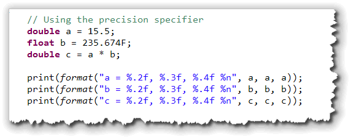
Here's what you should notice about this code:- Each of the three variables is printed using
%for fixed formatting. - Each variable is formatted using 2, 3 and 4 digits of precision. The same variable is passed once for each formatting placeholder.
- Each formatted string includes the line-independent newline character.
When run the output appears like this:
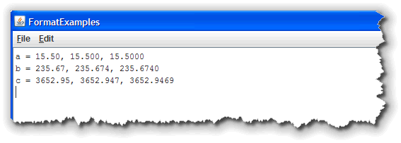
Notice that:
- Even though the variable
ahas only one significant digit after the decimal, zeros are added to the end of the number to match the specified precision. - Even though the numbers
bandchave many more actual digits of precision, the results are rounded (not truncated) when displayed according to the significant digits. Notice how3652.9469becomes3652.947and then3652.95at different precision values.
Finally, notice how the output appears on three lines,
even though print() was used for output, because
of the embedded newline in the formatted string. Also,
notice how the columns of numbers don't line up because
we specified precision but didn't specify the
width.
Remember, you'll only use the precision portion of the format specifier for real numbers, not for integers. If you supply a precision for an integer specifier, your code will compile, but fail with a runtime error when it executes.
Width Examples
Here are the same three variables with a width added
to the specifier. Notice that the first column is 10 characters
wide, the second 11 and the third 12.
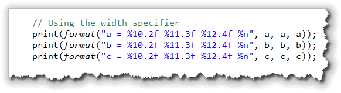
The width includes the characters to the right of the decimal, so it should always be larger than any precision. You can include a width specifier with integers andStrings
as well as with floating-point numbers.
Here's what the results look like when this fragment of code
is run:
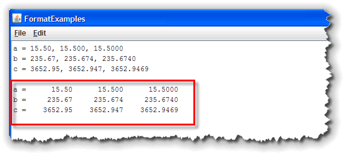
Notice that each column appears lined up, and the values are right-aligned inside each column.If your width specifier is too small (or, to put it another way, if one of your values is too large), then the width specifier is just ignored. The formatted value is never truncated to fit inside the specified width. That means you must make sure that your column widths are large enough to hold the largest possible value.
The width specifier works by adding spaces, called padding, in front of the characters in the formatted output string. That means that if you intend to display your formatted output using a proportional font, like Times or Arial, then your columns will not line up.
The Flags Field
Immediately following the format symbol (%) you
can supply various flags to further refine the
formatting results. Here are the most common ones
you'll use:
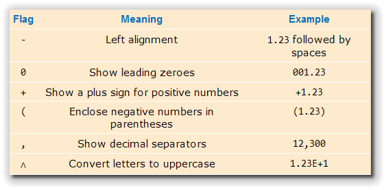
Here are some examples that use these formatting flags
Zero Pad
Sometimes, you may want to zero pad a column of
numbers. Here's what that code would look like:
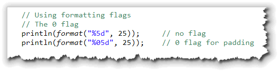
You might do this for a code listing, for instance, when displaying the line numbers in front of each line. (Eclipse doesn't do this, but many IDEs do.)
Here's what that looks like when displayed. Of course this really only makes sense when combined with the width modifier as I've done here.
Decimal Separators
For large numbers, often you want to add a comma between
each group of thousands. You do that with the ,
flag which looks like this:
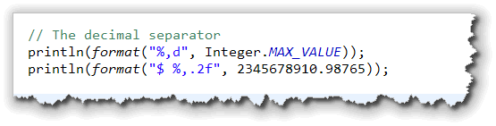
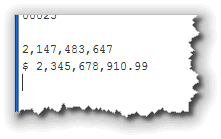
In the example shown here, I've added to a decimal separator to both an integer, (using the class constantInteger.MAX_VALUE which represents that largest possible
int), and to a floating point number.
In addition to the decimal separator,
I formatted the floating-point number by adding a dollar-sign
as a literal in the formatting string. There is no separate
currency format (that would adjust the symbol based on
the locale where the program was run), like there is for
the numeric formatting classes in the java.text
package.
Field Alignment
When you add a width as part of a format specifier, the contents
of the field (either numeric or text) are right-aligned inside
the field. That's the correct way to align numeric values (so the
decimal points line up), but it doesn't work very well for String
parameters. Suppose you had this format specifier:
println(format("%25s$%,12.2f", name, salary);
 where
where name is a String variable and salary is
a double. Here's what the output would look like if you used this
three times with different names and salaries.
Note that the first field is 25 characters wide, but that each of the names is right-justified inside that field. Normally, for text, though, we want the words to start in the same column. (At least for left-to-right-reading languages like English.)
To get that effect, just use the left-align flag, (or minus-sign), like this:
println(format("%-25s$%,12.2f", name, salary);
Here's the result:

Problems with the format() Method
There are two problems with using the Java format()
method and it's cousin, printf() for output
formatting.
The first is that format() is a Java 5 addition,
so your program won't run on machines that have an
earlier Java runtime. There are still a lot of systems
out in the "real world" that are using Java 1.3 or
Java 1.4.
The second problem is a little more serious, and is illustrated
in the program pictured here:

This simple program contains only two statements. The first
uses printf() to display the number 23.2 with
four decimals to the right, and right-aligned in a field 10-spaces
wide. If you look in the output section, you'll see the nicely
formatted number.
The second line, however, uses an int literal,
23, instead of the double used in
the previous line. The code compiles without error, but, when
you run it, the program "bombs" as you can see in the output.
This is the real problem with using format()
or printf(). If you use these methods, you are
entirely responsible for making sure that the format
specifiers and the number and type of parameters exactly
match. The compiler can't tell you if you've
made an error; you don't find out until your program runs.
Even though the example program shown here uses
printf() instead of the format() method,
the results will be identical in both cases.
Converting Strings to Numbers
When a user types the number 123 from
the keyboard, into text field or using the console, what is
actually stored in memory are the three binary values
0000-0000 0011-0010
0000-0000 0011-0011
char values
'1', '2', and '3', stored in a Java
String object.
If the user is entering values intended to be used in a
calculation, (and not a street address, for instance), those
three char values will have to be converted from
text to the binary 32-bit integer 123, shown here:
This process—turning human-readable text, input from the keyboard or a file, into binary numbers, (and its alter-ego, turning binary numbers into human-readable text), is the job of parsing numeric strings. Parsing is really just another form of type conversion.
Strings to Integers
The Scanner class, and the
ACM ConsoleProgram class do this conversion
for you, behind the scenes when you use the nextInt()
or readInt() methods.
This is perfectly adequate for console-mode input, since it
allows you to concentrate on the more important parts of
your program, and not get bogged down in unnecessary details.
It really isn't adequate for every situation, though. Once we move into the GUI world, like the GUI mileage calculator pictured at the very beginning of this lesson, or, when we start working with network and Web apps, all input and output must be done as text and then explicitly converted to the type you wish to use.
To show you how this explicit conversion works, examine the
fragment of code shown here:
This fragment, which uses System.out and a Scanner
object for input, asks the user to enter a whole number and then,
on line 19, reads the number (as a String), and stores it in the
String variable, numStr. (The Scanner next()
method reads a word instead of a line of text.)
But how do you turn the text input into a "real" number?
Well, once you've retrieved the String from
the user, you can convert it to an int value
by caling the static parseInt() method in the
Integer class, passing the String
containing the input retrieved from the user like this:
int num = Integer.parseInt(numStr);
The Integer class is one of Java's "wrapper" classes
that provides methods useful for manipulating primitive
types. Its parseInt() method will process a
String, and return its int
representation, if possible.
Remember that primitive types don't have methods and are not extensible. For each primitive type, though, Java has a "wrapper" class, that allows you to perform additional operations on primitive types and to extend them by creating a class whose single field is a primitive value.
Since parseInt() is a static function,
you can add this line to the top of your program if you want to
skip the extra Integer. everytime you call the method:
import static java.lang.Integer.*;
An Example
Here is an example applet, ConvertInt.java, that
takes the text from two Java AWT TextFields,
converts the text to integers, adds the integers together,
and stores the sum in an AWT Label object.
You'll learn how to create such interactive applets a little
later in the course. For right now, run the applet, type a
number into each text field, and then press ENTER while your
cursor is inside the second TextField.
Here's the "live" applet running on the web page:
along with the source code so you can get a flavor
for what you'll be doing:
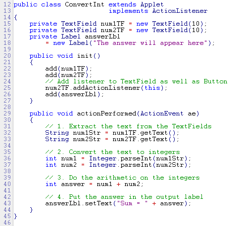
What is the Value of "Twelve"
Sometimes, a user will enter a value which cannot be
successfully converted to an integer. For instance, if you type
the word "twelve" into the TextField above, and
then press ENTER, Java throws an exception, but the rest
of the program continues normally:
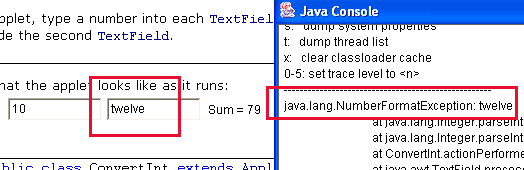
Later in the course, you'll see how you can trap such errors, and perhaps give the user some help. For right now, just ignore them. If you want to see the exception occuring, you can view the Java Console by right-clicking the little coffee-cup icon in the system tray, or by choosing "Sun Java Console" from your browser's Tools menu.
Floating-Point Input
For floating-point input, the process is almost identical to that used for integers:
- get a text value from the user
- change the value to a floating-point number
- do some arithmetic
- display the results as a
String
To do the conversion, for type double, take the
ConvertInt program, replace the primitive int
variables with type double, and replace the
call to Integer.parseInt() with a call to
Double.parseDouble(). Those are the only
changes you have to make.
Here's an applet, ConvertDouble.java, that
does just that. The only changes in the program (other
than the class/file name, are the three lines shown here:
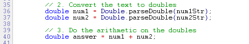
Alternative Methods
There are actually several ways to convert
floating point input. You can use the various parsing methods
in the NumberFormat class or you can use some
other methods from the Double class,
instead of Double.parseDouble() which wasn't
introduced until Java 2.
If you are writing a Java program that has to work in an earlier version of Java, such as the Java 1.1 that's used in the Microsoft Java Virtual Machine, or on the pre-OS X Mac, you must use one of these alternative methods.
Here is one alternative way to convert text into a
floating-point number. These are the steps to follow, after you've
retrieved the user's input
and stored it in a String.
- Create a new
Doubleobject, passing yourStringto theDouble(String)constructor. - Extract the primitive
doublefrom yourDoubleobject by sending it thedoubleValue()message.
Here's a code fragment that replaces the two lines in Step 2 (from the code shown previously) with the following four lines:
// 2. Convert text to double (alternate method)
Double num1D = new Double(num1Str);
Double num2D = new Double(num2Str);
double num1 = num1D.doubleValue();
double num2 = num2D.doubleValue();
Another alternative is to use the valueOf() method
from the Double class. This is a static
method, and does the same thing as the Double
constructor. The advantage of using valueOf() is
that you can "chain" the whole conversion into one "magical"
line, like this:
double num1 = Double.valueOf(num1TF.getText()).doubleValue();
Coming Up ...
In this lesson you learned how to convert between strings and
numbers. When converting numbers to strings, you learned how to
use Java's format() method to control the
number's presentation. When converting strings to numbers, you
learned how to use the wrapper classes Integer and
Double to parse the text input you receive
and then do the necessary conversion.
In the next lesson, you'll learn how to write your own methods.